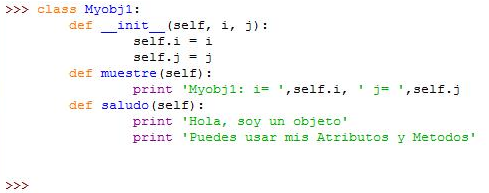
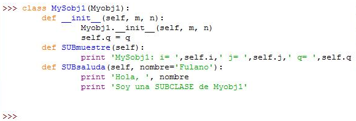
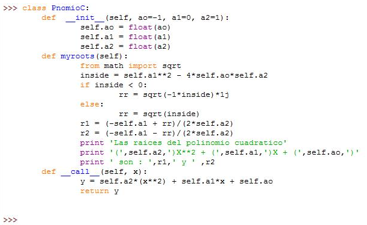

Esta obra esta protegida bajo una licencia de creative commons
Universidad de Panamá
2018
El lenguaje PYTHON dispone de herramientas para la programación orientada a objetos. Estas herramientas son elementos adicionales de fraccionamiento o modularización y complementan lo presentado en el capítulo IV. En sí cuando asignamos una variable, esta ya es un objeto, puesto que se dispone de unas funciones internas o métodos que permiten realizar procesos específicos con esa variable. Por ejemplo, al asignar una variable de número complejo en el interface (python shell):
>>> c = 2 + 5jPodemos consultar al programa el tipo de dato que es c usando la función interna type() :
>>> type(c)
<type 'complex'>
A su vez, c dispone de unas funciones propias por ser en sí un objeto de tipo complex que pueden ser usadas escribiendo su nombre seguido de un punto y el respectivo método:
>>> c.real
2.0
>>> c.imag
5.0
>>>c.conjugate
<built-in method conjugate of complex object at 0x02ABA6B0>
>>> c.conjugate()
(2-5j)
>>>
Los métodos .real, .imag y .conjugate() estarán disponibles con la acción de asignar a c un número complejo. En otras palabras, c no es sólo una VARIABLE en python, es un OBJETO.
Para la creación de un nuevo objeto en Python se usa la palabra clave 'class' seguida del nombre propio que se le da al objeto y debajo se programarán sus características y métodos específicos. Veamos un primer ejemplo:

Este código crea un nuevo tipo o clase denominado Myobj1 con dos variables de entrada i, j y con dos métodos propios que se programan usando la estructura de función y con la palabra clave 'def'. La primera función con el nombre __init__ es denominada un constructor y se requiere para inicializar un objeto. La palabra 'self' se usa para denominar las variables propias y no es exactamente una palabra clave, pero suele usarse por convención en la programación. Esta clase ya programada permite crear objetos mediante asignación directa así:
>>> o1 = Myobj1(3,4)
>>> o1.i
3
>>> o1.j
4
>>> o1.muestre()
Myobj1: i= 3 j= 4
>>> o1.saludo()
Hola, soy un Objeto
Puedes usar mis Atributos y Métodos
Con la clase creada de nombre Myobj1, podemos hacer una asignación a la variable o1, la cual será una instancia (en inglés se denomina 'instance') de la clase original con argumentos de entrada 3 y 4, o simplemente un nuevo objeto creado de la clase Myobj1. La instancia o1 hereda los atributos y métodos del objeto original, los cuales se invocan con un punto intermedio como muestra el ejemplo.
También con la clase Myobj1 podemos usar argumentos de entrada de diferente tipo para crear nuevos objetos, lo cual significa que cumple con el concepto de polimorfismo en programación. Como ejemplo se puede crear una nueva instancia o2 con argumentos de entrada de otro tipo:
>>>o2 = Myobj1( 1.2, 'help')
>>> o2.i
1.2
>>> o2.j
'help'
>>> o2.muestre()
Myobj1: i= 1.2 j= help
>>> o2.saludo()
Hola, soy un Objeto
Puedes usar mis Atributos y Metodos
>>>
Aquí los argumentos de entrada son de tipo punto flotante y de caracteres. Observe que los atributos y métodos funcionan igualmente.
Otro aspecto importante es que podemos crear nuevas clases a partir de clases ya existentes, las cuales se denominan subclases. Estas subclases heredan los atributos y métodos de la clase base. Veamos el siguiente ejemplo de la creación de una subclase:

En este código, después de la palabra clave 'class' viene el nombre de esta subclase MySobj1 y entre paréntesis está el nombre de la clase base Myobj1. En el constructor de inicio, llama el inicio de la clase base para asignar los dos primeros argumentos y luego se asigna el tercer argumento. Así queda la subclase con tres atributos, dos heredados i, j y su nuevo definido como q. La nueva subclase define dos métodos SUBmuestre y SUBsaluda, además de heredar los métodos de la clase base saludo y muestre. El nuevo método SUBsaluda tiene como argumento opcional de entrada el nombre para hacer un saludo más personalizado. Veamos la creación de un nuevo objeto usando esta subclase y exploremos sus atributos y métodos:
>>> o3 = MySobj1(1, 2, 3)
>>> o3.i
1
>>> o3.j
2
>>> o3.muestre()
Myobj1: i= 1 j= 2
>>> o3.saludo()
Hola, soy un Objeto
Puedes usar mis Atributos y Metodos
>>> o3.q
3
>>> o3.SUBmuestre()
MySobj1: i= 1 j= 2 q= 3
>>> o3.SUBsaluda()
Hola, Fulano
Soy una SUBCLASE de Myobj1
>>> o3.SUBsaluda('Andres')
Hola, Andres
Soy una SUBCLASE de Myobj1
El nuevo objeto creado o3 a partir de la subclase MySobj1 hereda los atributos i, j y los métodos muestre, saludo de la clase base Myobj1. Además cuenta con un nuevo atributo q y dos nuevos métodos SUBmuestre, SUBsaluda de la definición de la subclase.
El siguiente ejemplo muestra un nuevo constructor en las clases, el cual permite que el objeto definido con esta clase responda con un valor calculado como en una función. Este código define un polinomio cuadrático con sus coeficientes definidos por el usuario si desea, o se asignaran por el código:

Este ejemplo muestra el constructor de inicialización __init__ que define los coeficientes del polinomio cuadrático, ao, a1 y a2. Cuando se crea un objeto a partir de esta clase, se puede especificar los coeficientes del polinomio, o la clase asignará al objeto ao=-1, a1=0, a2=1. El constructor __call__ define la variable x como nuevo argumento de entrada y el cálculo del polinomio en x, que se asigna a la variable y para ser devuelta al ambiente del programa. Adicionalmente se cuenta con un método denominado myroots, el cual calcula las raíces del polinomio y las presenta en pantalla usando una función para el cálculo de raíces cuadradas SQRT() que es importada del módulo de matemáticas MATH.
Con esta clase de PnomioC podemos crear nuevos objetos de polinomios con los coeficientes que se deseen y será posible evaluar el polinomio en cualquier valor de la siguiente manera:
>>> f1 = PnomioC()
>>> f1.myroots()
Las raíces del polinomio cuadrático
( 1.0 )X**2 + ( 0.0 )X + ( -1.0 )
son : 1.0 y -1.0
>>> z = f1(1)
>>> z
0.0
>>> z = f1(0)
>>> z
-1.0
>>>
f1 se crea como un nuevo objeto de polinomio, el cual puede visualizarse con el método myroots y a su vez podemos evaluarlo como una función cualquiera y asignar su resultado a una nueva variable z. Esto último se logra con el constructor __call__ .
Esta obra esta protegida bajo una licencia de creative commons
Universidad de Panamá
2018